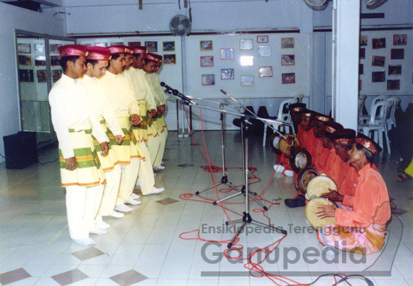

Guide to Location
Click here below for direction (Google Map)
Socials


About Developer Back to Top 🠕
Attraction
1. Keropok lekor


2. Ulik Mayang

3. Rodat Terengganu


Click here below for direction (Google Map)